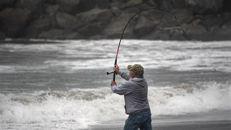

Casting
Τι είναι το casting

Το casting είναι η βασική τεχνική ρίψης όπου ο ψαράς χρησιμοποιεί τη δύναμη του καλαμιού για να «εκτοξεύσει» το δόλωμα ή το τεχνητό σε συγκεκριμένο σημείο, είτε από ακτή είτε από βάρκα. Ο συνδυασμός κίνησης του καλαμιού και βάρους του δολώματος λυγίζει το blank και η ελαστική επαναφορά του καλαμιού δίνει την απόσταση στη βολή. Δείτε εδώ και για το surfcasting.
Εξοπλισμός
Στο casting χρησιμοποιούνται συνήθως καλάμια μεσαίας ή μεγάλης δύναμης και μηχανισμοί spinning ή baitcasting, ανάλογα με τα βάρη που ρίχνουμε και το αν δίνουμε έμφαση στην απόσταση ή στην ακρίβεια. Η σωστή επιλογή πετονιάς ή νήματος και βαριδιού/τεχνητού είναι κρίσιμη, ώστε να «φορτώνει» σωστά το καλάμι στη βολή και να αποφεύγονται μπερδέματα στη γραμμή.
Βασικά βήματα βολής
Ο ψαράς φέρνει το δόλωμα σε απόσταση λίγων δεκάδων εκατοστών από την άκρη του καλαμιού, παίρνει θέση με το σώμα στραμμένο προς τον στόχο και λυγίζει το καλάμι προς τα πίσω, ώστε να φορτωθεί. Με μια ομαλή, γρήγορη κίνηση φέρνει το καλάμι προς τα εμπρός και αφήνει τη γραμμή την κατάλληλη στιγμή, ώστε το δόλωμα να φύγει χαμηλά και ελεγχόμενα προς το σημείο που θέλει να ψαρέψει.
Πού χρησιμοποιείται
Η τεχνική casting εφαρμόζεται σε ψάρεμα από ακτή, μόλους, βράχια αλλά και από βάρκα, όταν χρειάζεται να φτάσουμε σε συγκεκριμένες αποστάσεις ή να περάσουμε πάνω από δομές, φύκια και κοπάδια ψαριών. Με εξάσκηση προσφέρει μεγάλη ακρίβεια στη ρίψη, κάτι που είναι απαραίτητο για να παρουσιάζεται σωστά το δόλωμα και να αποφεύγονται σκαλώματα σε δύσκολους βυθούς.